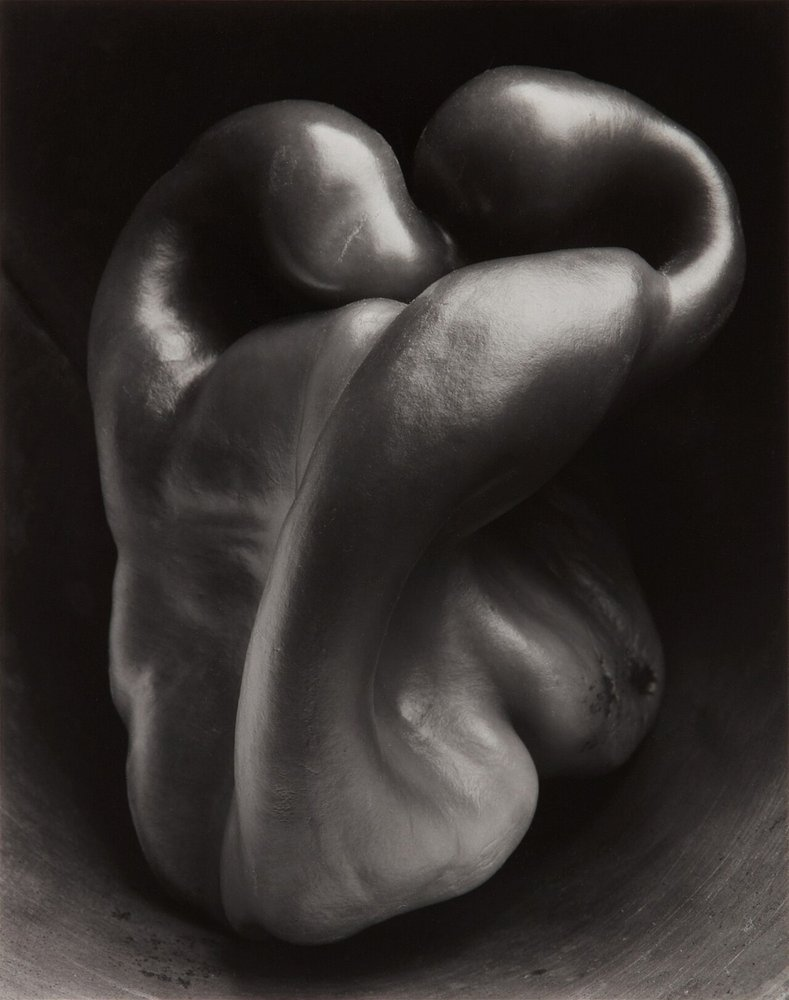

Pepper No. 30
Edward Weston · 1930 · Gelatin silver print, printed later by Cole Weston
In copyright. Look and learn: shown for study, not for download.
Edward Weston, forty-four, made at least thirty negatives of peppers between 2 and 6 August 1930. He thought plain backdrops gave too stark a contrast, so on the first day he laid a large tin funnel on its side and set the pepper just inside its mouth. He used an 8×10 view camera with a Zeiss lens; his daybook gives the exposure as six minutes, while his grandson said four to six hours. Weston made at least twenty-five prints of it. After his death his son Cole printed more to his specifications, and this image comes from one of those.